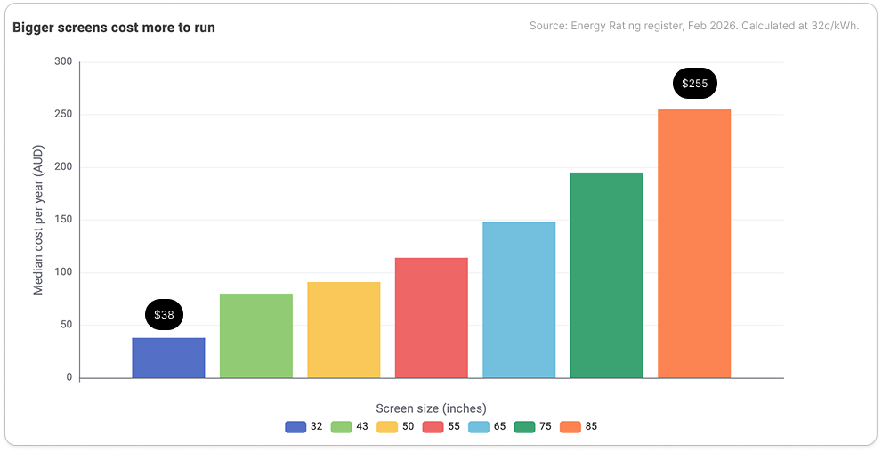
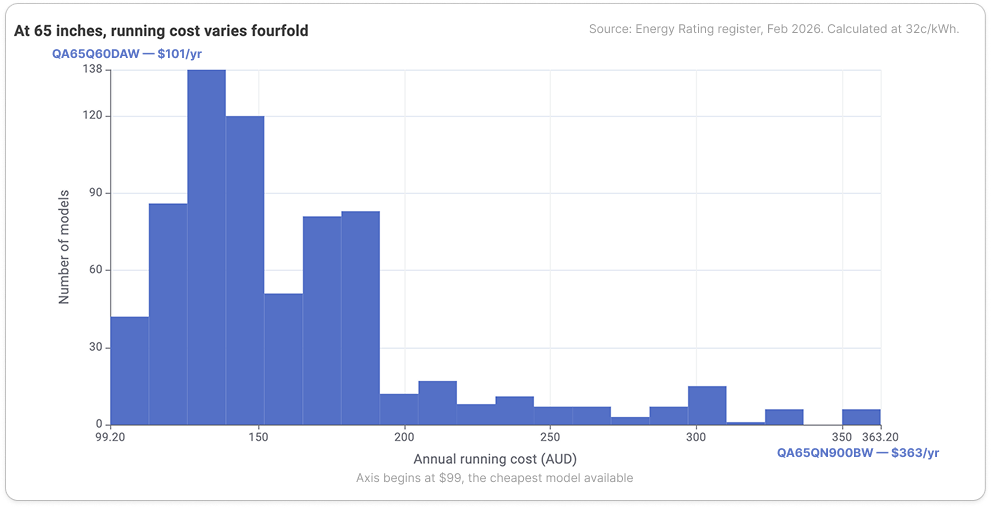
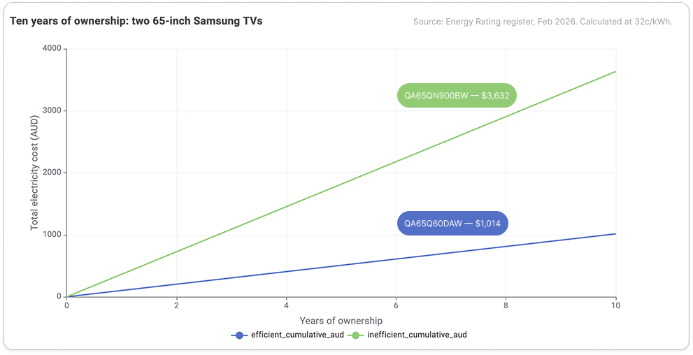
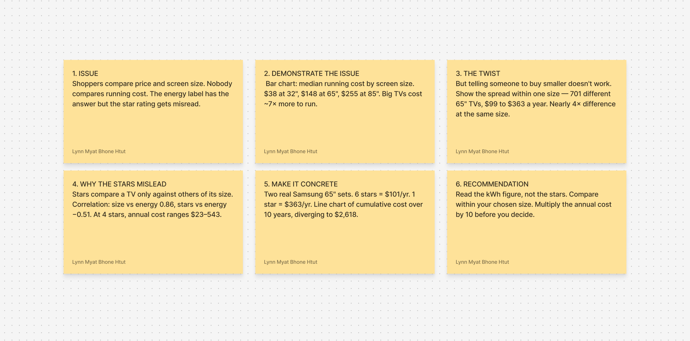
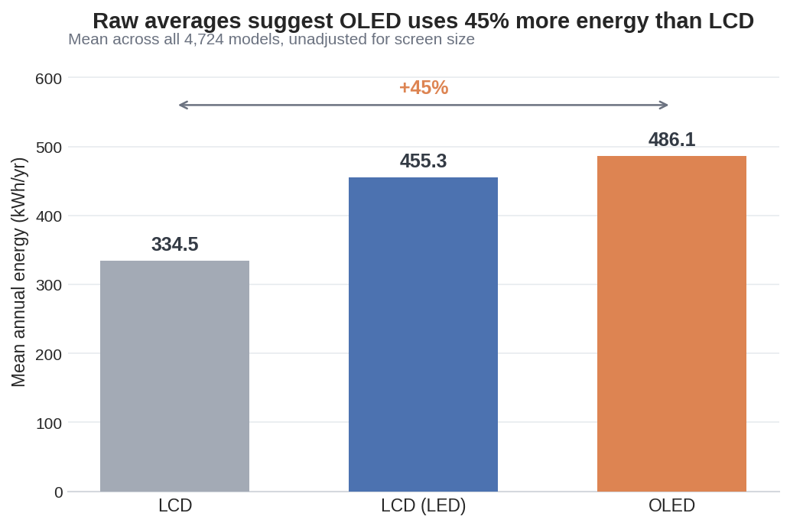
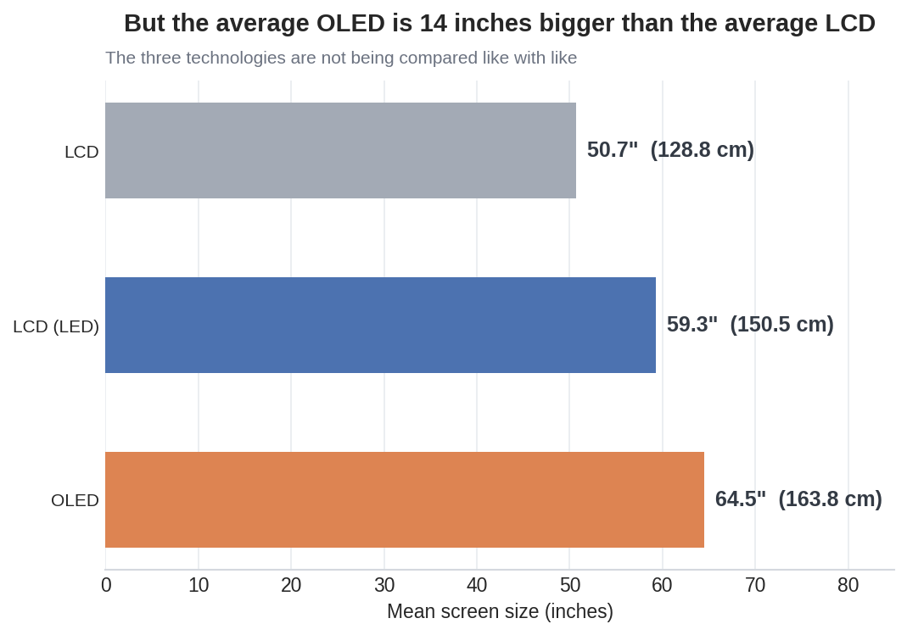
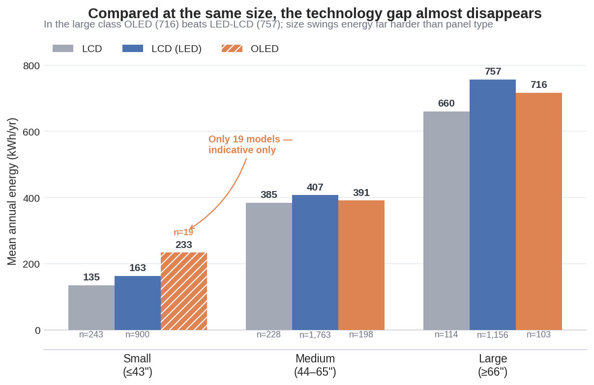
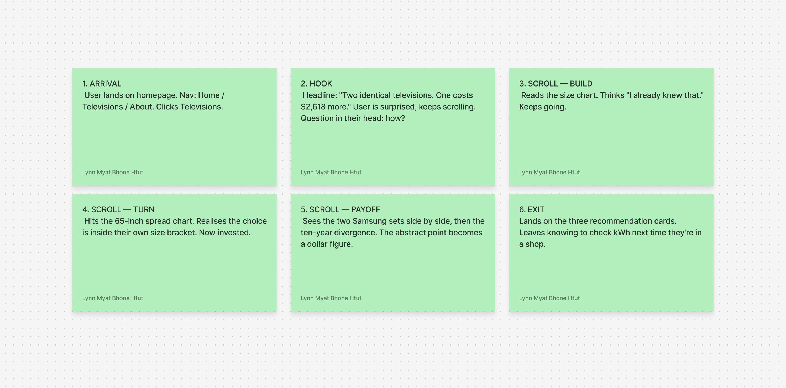

Screen size vs energy use
A strong relationship. Size tells you a great deal about what a television will consume.
The energy label, explained
When you compare televisions in a shop, you compare the price on the tag and the size of the screen. What you cannot see is what the set will cost you every year for the next decade. That figure is printed on the energy label — but the part most shoppers look at is the part that answers a different question entirely.
Panel 1 of 5
This is the part most people already suspect. Across every television currently registered for sale in Australia, the median running cost climbs steadily with screen size: about $38 a year for a 32-inch set, $148 for a 65-inch, and $255 for an 85-inch. A large television costs roughly seven times as much to run as a small one.

Useful, but not actionable. Somebody who has decided they want a 65-inch television is going to buy a 65-inch television. Telling them to buy smaller is advice they will not take. So the more useful question is not how much a size costs — it is how much choice you have within the size you already want.
Panel 2 of 5
There are 701 different 65-inch televisions available in Australia right now. The cheapest to run costs about $99 a year. The most expensive costs $363. That is nearly a fourfold difference between sets that occupy exactly the same space on your wall.

Screen size is a strong predictor of energy use, but it is clearly not the only one. Something else is separating the cheap sets from the expensive ones — and it is not the number most buyers are looking at.
Panel 3 of 5
The star rating is the most visible thing on an energy label, and it is widely read as "how much power will this use?" It does not answer that question. A television is rated against other televisions of the same screen size, so the rating answers a narrower question: is this an efficient set for its size?
A strong relationship. Size tells you a great deal about what a television will consume.
Much weaker. More stars does mean less energy, but only loosely, and only within a size class.
The spread in running cost among televisions carrying the exact same star rating.
This is the gap at the centre of this story: the number shoppers trust most is measuring something other than what they think it is. A four-star rating on a large television and a four-star rating on a small one describe two completely different electricity bills.
Panel 4 of 5
To make the difference concrete, here are two Samsung televisions you could buy today. Both are 65 inches. Both use LED-backlit LCD panels. Neither is an unusual or specialist product.
| Model | Star rating | Energy use | Cost per year | Cost over 10 years |
|---|---|---|---|---|
| Samsung QA65Q60DAW | 6.0 | 317 kWh | $101 | $1,014 |
| Samsung QA65QN900BW | 1.0 | 1,135 kWh | $363 | $3,632 |
The second set is an 8K flagship, and some of that consumption is the price of the technology rather than poor engineering. But that is precisely the point for a buyer: premium features carry a running cost that is not mentioned anywhere near the price tag.
Panel 5 of 5
A television is not a purchase you repeat often. Most households keep one for the better part of a decade, and the running cost accumulates quietly the whole time.

$2,618
The difference in electricity cost over ten years between two 65-inch Samsung televisions — more than the purchase price of either one.
What to do with this
The kilowatt-hours per year figure is printed on the same label. It is the number that becomes your bill. The stars only compare a set to others of its own size.
Once you have chosen a screen size, the choice you have left is still worth hundreds of dollars a year. Shortlist on running cost as well as price.
Take the annual figure and multiply it by the years you expect to own the set. That is the number to weigh against the difference in purchase price.
Behind the story
Before any code was written, this story was mapped as a narrative arc: what the reader needs to learn, and in what order, from the opening issue through the evidence to the closing recommendation.

Panel technology, compared
You have settled on a budget and you are now standing in front of three labels: LCD, LED-LCD and OLED. Somewhere along the way you have heard that OLED is a power hog — that the picture is better but the running cost is punishing. Before you let that rule OLED out, it is worth asking what the register actually says.
Panel 1 of 6
Across all 4,724 televisions in the register, OLED sets average 486 kilowatt-hours a year. Plain LCD sets average 335. That is a 45 per cent gap, with LED-LCD sitting in between at 455. On these numbers alone, the advice to avoid OLED writes itself.

Panel 2 of 6
The average LCD in the register measures 50.7 inches. The average OLED measures 64.5 inches, with LED-LCD at 59.3 inches in between. OLED is barely sold in small sizes at all — it is a premium panel fitted to premium, which is to say large, screens.

So the 45 per cent penalty may not be measuring the panel at all. It may simply be measuring fourteen extra inches.
Panel 3 of 6
Story one established that screen size predicts energy use strongly. Hold the technology constant and the effect is stark: small LCD sets average 135 kilowatt-hours a year, while large LCD sets average 660 — nearly a fivefold swing within a single panel type.
Any comparison that ignores size is really a size comparison wearing a technology label. To see the panel on its own, the models have to be split into size classes and compared within them.

| Technology | Small (≤43″) | Medium (44–65″) | Large (≥66″) |
|---|---|---|---|
| LCD | 134.9 (243 models) | 384.6 (228 models) | 659.6 (114 models) |
| LCD (LED) | 162.6 (900 models) | 407.1 (1,763 models) | 756.8 (1,156 models) |
| OLED | 233.3 (19 models) | 390.7 (198 models) | 716.2 (103 models) |
Panel 4 of 6
Compared like with like, the penalty does not survive. Among the largest sets, OLED is not the worst performer — it beats LED-LCD outright. In the medium class the three technologies are effectively tied.
486 kilowatt-hours against 335 for LCD, a difference of about $49 a year — but driven largely by screen size.
Among sets 66 inches and over, OLED averages 716 kilowatt-hours and LED-LCD averages 757. OLED comes out ahead by about $13 a year.
LCD 385, OLED 391, LED-LCD 407. The entire spread is worth about $7 a year. Panel type is not deciding this.
One cell deserves a warning. Small-screen OLED reads 233 kilowatt-hours, well above the other two technologies — but only 19 models sit behind that number, against 243 LCD and 900 LED-LCD. It is indicative at best, and it should not be read as a finding about small OLED televisions.
Panel 5 of 6
Once size is held constant, the 45 per cent penalty mostly evaporates. What looked like a verdict on OLED turns out to have been a verdict on big screens. So choose the technology on the things it genuinely decides — contrast, viewing angle, brightness in a sunlit room, and price — and not on a running cost difference of roughly a dollar a month.
$13
The yearly running cost difference between the best and worst panel technology once screen size is held constant — against the $262 a year separating two 65-inch televisions in story one.
Panel 6 of 6
The running cost difference between technologies at the same size is small enough to ignore. Decide on contrast and room brightness instead.
Size swings energy use roughly fivefold. It is the single most consequential decision you make, and it is made before you ever look at a panel type.
Within one size and one technology, the kilowatt-hour figures still differ enormously. That is where the thousands of dollars in story one came from.
Behind the story
This story was mapped as a six-beat arc: raise the issue, demonstrate it with the raw figures, dig into why the comparison is unfair, explain the factor doing the real work, show the before and after, and close on a recommendation.
